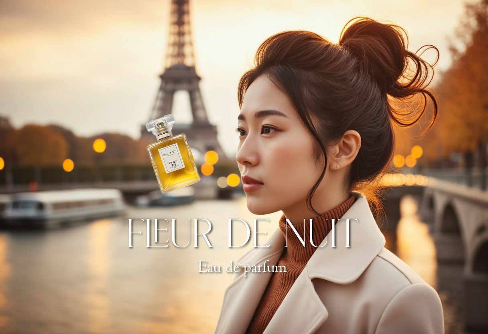
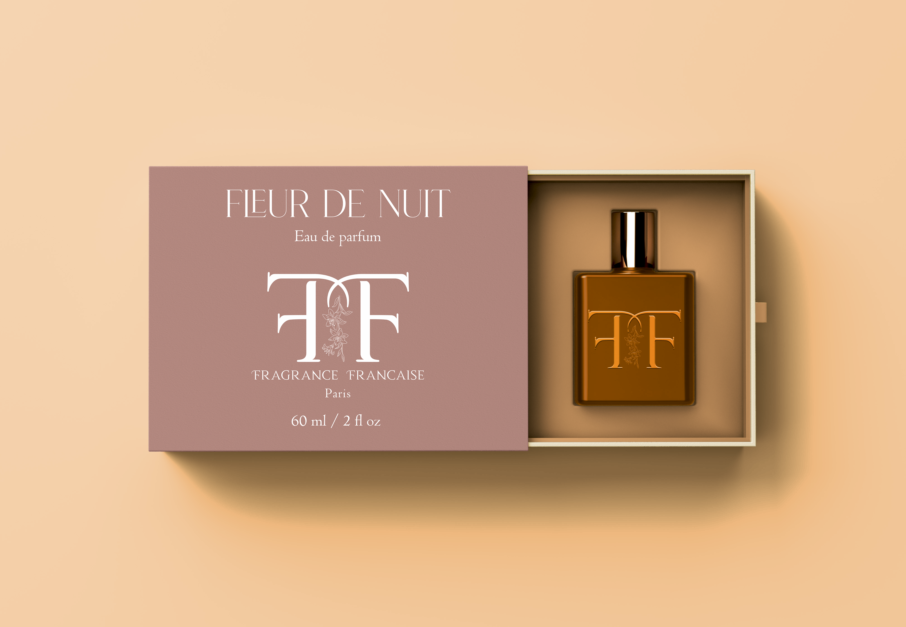

BRANDING
DESIGN
Fragrance Française est une marque fictive de parfum créée pour illustrer mon expertise en design. Inspirée par l’élégance de la parfumerie française, elle allie tradition et modernité : monogramme « FF », palette raffinée et typographies soignées pour une image luxe. Sa mission : proposer des expériences olfactives d’exception en innovant dans le respect des codes français, portée par des valeurs d’intégrité, de qualité, de créativité et d’authenticité.
2025
PROJECTS HIGHLIGHTS
-

-

- 
-

-
COLLECTION 2025 :
LE LUXE PARISIEN
EN TOUTE SIMPLICITÉ
- 
-


WEB DESIGN ET SOCIAL MEDIA
L’élégance française, pensée pour le digital.
FRAGRANCE FRANÇAISE déploie son élégance au digital avec un univers web & social minimaliste et cohérent : identité étendue, grilles et rythmes visuels, typographies soignées et palette nocturne autour de Fleur de Nuit. La direction artistique orchestre l’expérience de la landing aux carrousels, stories et bannières, avec lignes éditoriales fines et templates modulaires. Objectif : une présence élégante, mémorable et intemporelle où chaque publication prolonge la signature de la Maison.
2025 TRE ND.